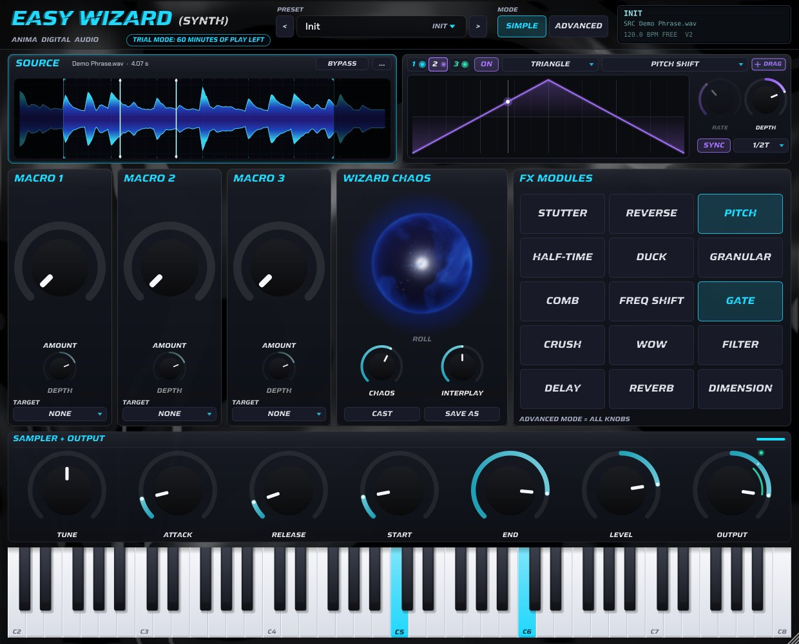
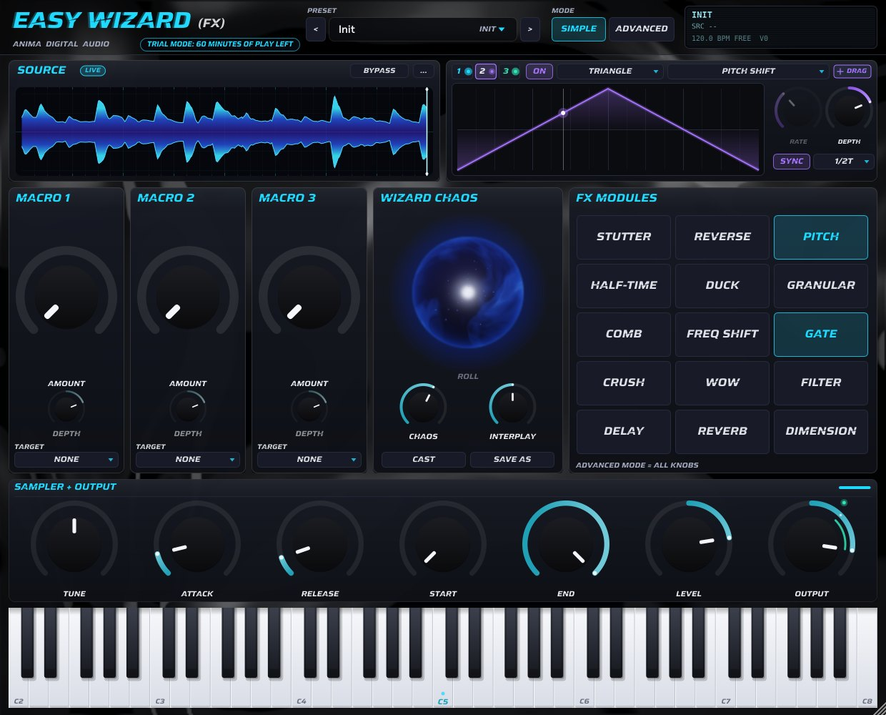

Easy Wizard
Two plug-ins on one engine. Easy Wizard (Synth) plays any sample from your keyboard; Easy Wizard (Fx) processes any track. Both run the same fifteen modules, three LFOs and the Chaos orb, and one license unlocks both.


Built for moving sound
Easy Wizard is for producers who want sound that doesn't sit still: chopped, pitched, stretched into space and pulled back again.
Everything is smoothed inside the audio engine, so you can turn knobs, switch modules and jump between presets while it plays. An automatic gain stage keeps every preset at the level of the dry sound.
- Sound designLoad a sample and turn it into a playable, evolving instrument.
- BeatsStutter, reverse, half-time and a tempo-synced gate on drums or loops.
- TransitionsPitch dives, washes and chaos rolls on a bus or a single track.
- Live playClick-free changes, so you can perform with it.
What's inside
Fifteen modules in three groups, with modulation that you draw and drag.
RhythmStutter · Reverse · Pitch · Half-Time · Duck
Cut, flip and pitch the sound in time with your DAW. Pitch moves ±12 semitones with a clean, exact shift; Duck listens to a sidechain input.
TextureGranular · Comb · Freq Shift · Gate · Crush
Grain clouds, metallic combs, frequency shifting, a tempo-synced gate from 1/4 to 1/32 and bit crushing.
SpaceWow · Filter · Delay · Reverb · Dimension
Tape wow, a resonant filter, delay, reverb and stereo dimension to place the result in a room.
Wizard Chaos orb
One click on the orb rolls a new combination of modules and settings. Chaos sets how wild it gets, Interplay how the modules work together. Keep what you like with Save As.
Three LFOs, envelope follower and macros
Draw LFO shapes point by point and bend the curves. Drag an LFO onto any knob to modulate it; each LFO has its own colour, and the knobs it moves light up in that colour.
Synth and Fx
The Synth version loads a sample, previews files in the browser and lets you drag START and END right on the waveform. The Fx version sits on any track with a live waveform and a sidechain input.
Play it for an hour, free
The trial is the full plug-in, Synth and Fx, with every module and preset. Only the time sound runs through it counts. When the hour is used up, the output fades to silence until you activate.
On a Mac, see the one-time install step below.
One license, both plug-ins
- Easy Wizard (Synth) and Easy Wizard (Fx)
- VST3 and AU, plus a Windows standalone app
- Native on Apple Silicon and Intel Macs
- Offline activation, no account or iLok
- One license activates one computer
Secure checkout by Creem, our merchant of record. VAT is included where it applies. 14-day refund if it doesn't run on your system.
Activating your license
Easy Wizard activates with a small license file. It takes a minute, and the plug-in then works without internet.
Buy
Check out through Creem. The license key is shown right after payment and sent by e-mail.
Copy your Hardware ID
In the plug-in, click the TRIAL MODE badge and press COPY next to the Hardware ID.
Get the license file
Open the activation page, paste the key and the Hardware ID. license.lic downloads at once.
Load it
Click LOAD LICENSE FILE and choose license.lic. Synth and Fx are both unlocked on this computer.
Installing on a MacmacOS may call a downloaded plug-in “damaged”. Here's the one-time fix.
Easy Wizard is distributed outside the Mac App Store, so macOS quarantines the download and may say the plug-in “is damaged” or “can't be verified”. The files are fine: the install script removes the quarantine flag.
- Unzip the download and double-click Install Easy Wizard.command. If macOS blocks it, right-click it, choose Open, then Open again.
- Enter your Mac password when asked. Nothing is shown while you type.
- Installing by hand instead? Copy the .vst3 files to
/Library/Audio/Plug-Ins/VST3/and the .component files to/Library/Audio/Plug-Ins/Components/, then run the command below in Terminal. - Restart your DAW or rescan plug-ins. Easy Wizard is listed under Anima Digital Audio.
sudo xattr -rd com.apple.quarantine "/Library/Audio/Plug-Ins/VST3/Easy Wizard (Synth).vst3" sudo xattr -rd com.apple.quarantine "/Library/Audio/Plug-Ins/VST3/Easy Wizard (Fx).vst3" sudo xattr -rd com.apple.quarantine "/Library/Audio/Plug-Ins/Components/Easy Wizard (Synth).component" sudo xattr -rd com.apple.quarantine "/Library/Audio/Plug-Ins/Components/Easy Wizard (Fx).component" killall -9 AudioComponentRegistrar
Keep the quotes: the file names contain spaces.


Questions?
Installation, activation, moving a license to a new computer, refunds: write to us and we answer by e-mail, usually within a day.